Technical Achievements
Mobile Game
My first project this semester was creating a Flutter
like mobile game. In this game I worked on creating a parallax effect, sprites, saving and lighting.
I started this project with the task of implementing the parallax effect.
Typically, the parallax effect is implemented by moving the different layers of the background with the sprite but at different speeds.
I was tasked with implementing the parralax effect but with touch and drag. I did this by moving the the backgrounds at different speeds while
my finger was dragging around the screen.
Here is the code that makes it work. It first sets Delta1 to be how much the finger has moved on the screen by using raycasting. It then will check if the finger is currently moving on the screen. If it is it will move all the layers sprite of the background at different speeds based on what layer they are grouped in. All the sprites that make up the background are stored in three different gameobjects in the project representing the front, middle and back. The last method in the move will check if the finger is trying to move out of bounds. The values are currently hardcoded since eventually they will need to be changed and stored in constants once the game reaches later stages. This method just uses the clamp function to set the position each of the gameobject storing the images to be unable to scroll outside of the scrollable area. I adapted code from these two tutorials to get the scrolling to work (Video 1, Video 2) and this video to get the implement the raycasting techniques to move the screen
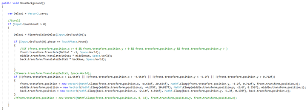 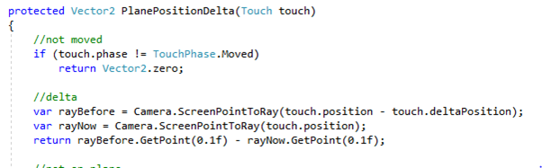Here is a video showing how the scrolling works ingame
For the frogs I made this script that is run every tick and it checks if the players finger is inside of the frogs collider by getting their fingers position on the screen and seeing if it collides with the frogs collider. I had to also add a boolean that would be true if the frog was touched and would be set to false when the finger was released from the screen so that when you move your finger fast around the game while touching the sprite you will not drop the sprite. When pressed, I also set the sorting order of the frog to the front so that a frog will be pulled to the front most layer of the project. A frog is spawned inside the middle layer so when it is first touched it will be brought to the front.
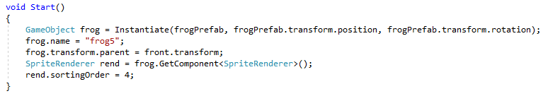When first adding the frogs I ran into a problem with moving the background at the same time. I fixed this by adding a variable to the moving background script that will check if a frog is currently being touched. If it is, then it will not move the background with the finger press.
Another mini task I had with the frogs was to make them spawn at the start of the game on their without them already existing in the scene. I did this by creating a prefab for the frog in Unity and then instantiating it on start of game. Here is me instantiating one of the frogs at the start of the game. This could easily be modified to spawn hundreds of frogs using a loop but I have done this small example for now.
I followed this tutorial here to add lighting to the game. I used a freeform light to draw a cutom shape onto the screen and this is what it looks like ingame.
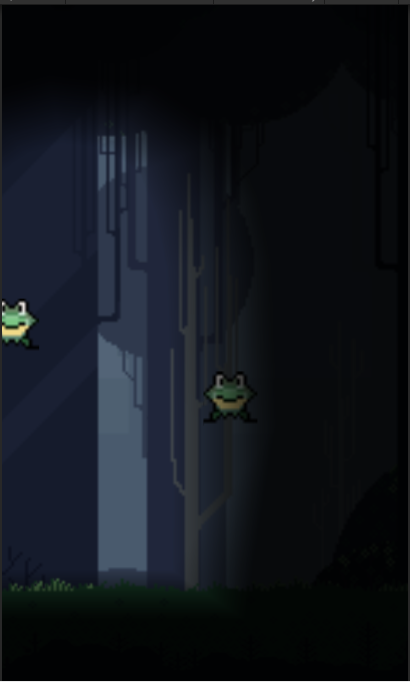
The last feature that I added was saving to a text file. To do this I followed this tutorial and modified it so that I could save the frog.
The data is saved in the applications persistent data path. When a frog is created it will call the load frog method. If the frog exists, its position will be loaded and so will its sorting order. The frogs position will
be saved every timer tick. This saving method is just temporary until a menu or some other way to save is implemented. The frog data is a serializable class that is used to outline what will be saved. Currently only the frogs
position and sorting order is saved. The save system works by adding the saving the data to the persistentDataPath location in binary form and by retrieving the data for a specific frog in binary form and translating
it back to normal data.
This first screen shot is the code that outlines what is saved for a frog. At this point the only things that are saved are the frogs position and its sorting order

This screen shot outlines what happens when the frog is saved and loaded. When it is saved it gets the frog and saves it to the persistent datapath linked to the frogs name. The load frog function retrives the data from the frogs persistent datapath and then returns it to the method that called it.
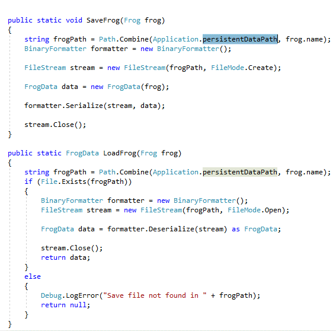This is where the saving and loading occurs inside of the frog class. The save method just passes through itself to the save frog method. The load data retrives the saved data and then adjusts its current position and sorting order.
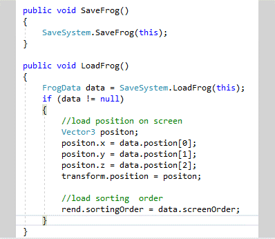Reflection
This project tested me and my persistence from the get go. I was constantly running into small issues and hiccups while I was trying to implement any feature. For the little amount of time (4 weeks) I spent on the game I am quite happy with what I produced. I was disappointed to move on for the game since I was just picking up speed with developing it. I did struggle to see the vision for the game since I was the one who started making the game and there wasn't any of our own assets to use for the game. Overall I enjoyed creating and I feel like I learned lots of different skills. When developing for SKIN last semester, I was working with other peoples code from years ago that was poorly documented and confusing which caused me to struggle quite a bit when implementing features. Starting my own game from scratch mean that when developing it I could easily debug and weed out bugs and redundant code. This meant I could get a lot more work done in a short amount of time.
The 2D Tester Game
Developing the first game came to a rapid halt when an opportunity came up to work with a client on a 2D platforming game. The idea of this mini project was to get as many skills as possible so I was not out of my depth when working with the client. The opportunity fell through but I did learn many skills and basic of designing a 2D platformer. I created a character and enemies with animations, ranged and melee combat coins, dissolve effect and level design using two different methods.
To create the character I followed this tutorial for a basic 2d character and used the scripts from the tutorial to get a character drawing to the screen. I made no modifications to the script and just used it so I could play around with other features of a 2D platformer.
The animation was done by following this tutorial. This tutorial taught me the basics of using the animator FSM and how to change between different animations based on certain criteria being met
Here the code tells the sprites animator component that the player has currently landed on the ground, and to set the is isJumping Boolean to false. The other method runs when the player has pressed or released the crouch key and it sets the animators isCrouching Boolean to what the current isCrouching value is
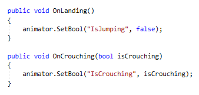This screen shot shows the animator and a transition between the player_idle and player_crouch states. While the player is idling, if the player presses he crouch key the value for is crouching will change and it will transition to the player_crouch animations
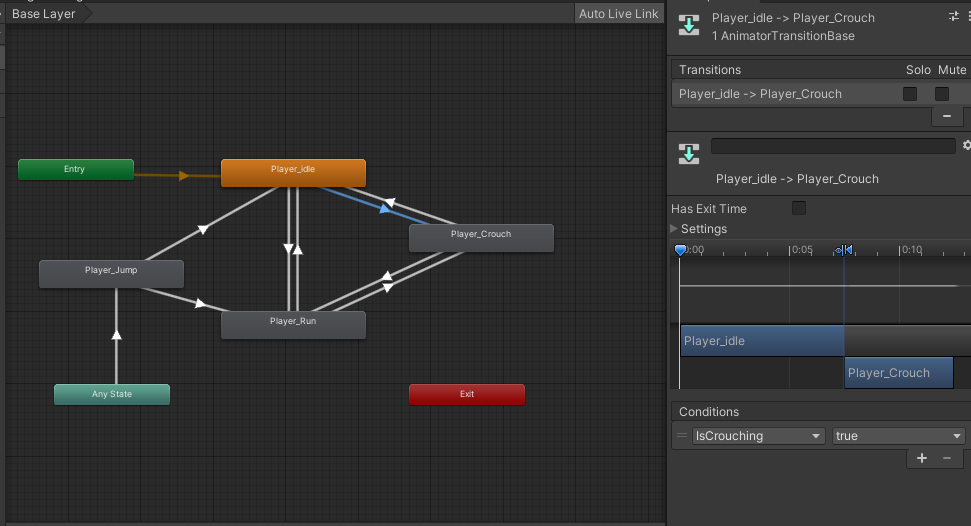Here is a video showing the animations of the character
For the background I tried two different methods. The first method I used was tilemaps. I followed this tutorial here to create a level using the tilemap. To use the tilemap I used the tile palette to select the tile I wanted and then I would draw it to the screen to create the level. To create collision between the player and the tilemap I had to add a collider to the tilemap
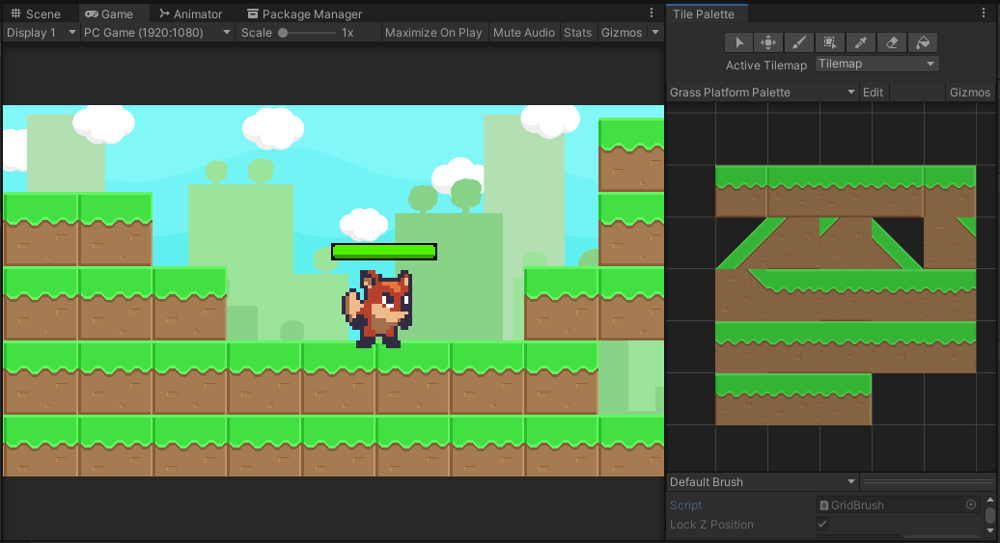To use sprite shape I followed this tutorial here. Sprite shape allowed me to freely use the tiles and draw a more elegant level than the blocky tile map.
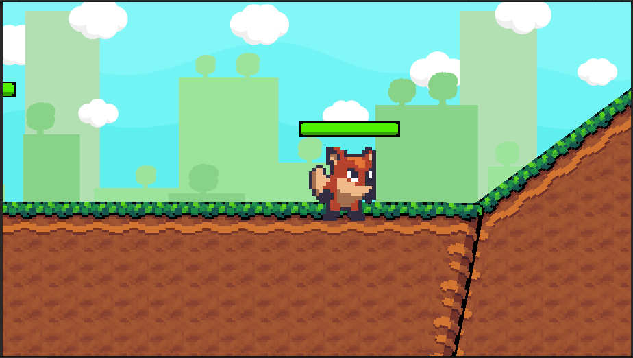Adding coins to the game was quite easy. All that I needed to do was drag the sprites in to create an animation. They were not collectable but adding a rigid body and collider to it would let me be able to collect and or push them around.
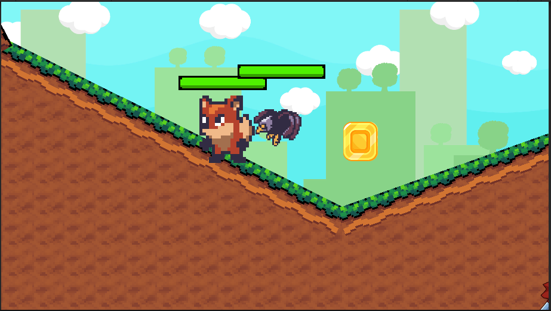I added enemies in the game and gave them a pathfinding script so that they will follow the player. I had originally planned to give them a whole finite state machine for idling, following and attacking but I moved on from the project before I could add them. I used this video to implement a player follow for the bird. This path following works by drawing an imaginary line towards the player every tick and following it. The class below runs on every update. It first checks if the path towards the player is complete and then returns if it is. If not, it will move towards the player and then check if there is a large distance away. If there is it will increase the value of currentWaypoint which. After all this, it will check if the sprite is facing the right direction and then it will flip it if it is not.
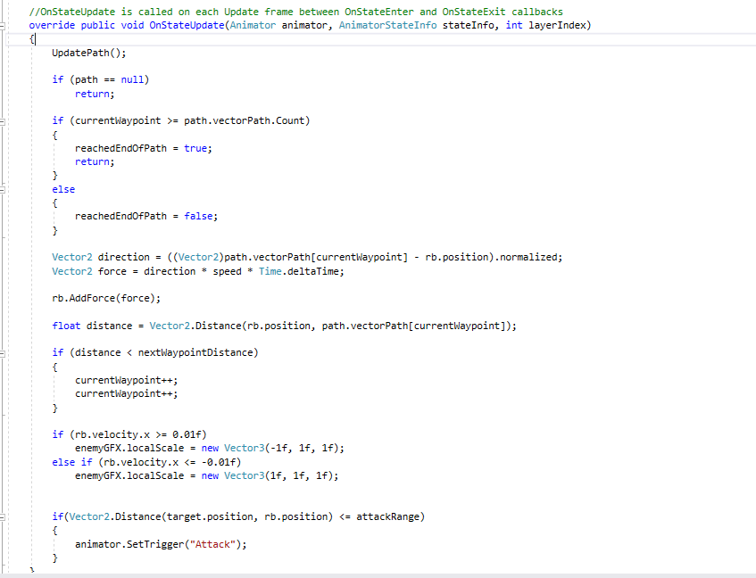I followed this tutorial to add health bars to the game. The health bars go down based on how much health the player has. I used this code below to make the health bars. It works by setting the sliders value to equal the current health value of the sprite using the health bar. When a sprite is first initialized it calls the SetmaxHealth function and sets the maximum value for the health bar.
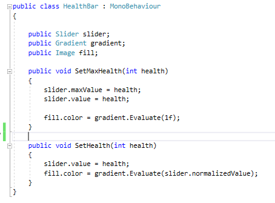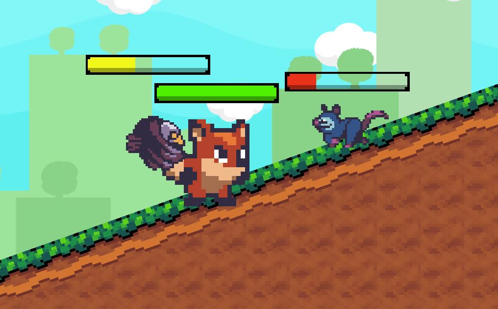
I added two types of attack to the game. The first I added was ranged. To add ranged attacks to the game followed this tutorial here. The range attack works by spawning a prefab of a bullet every time right click was pressed and then deleting the projectile once it collides with a gameobject.
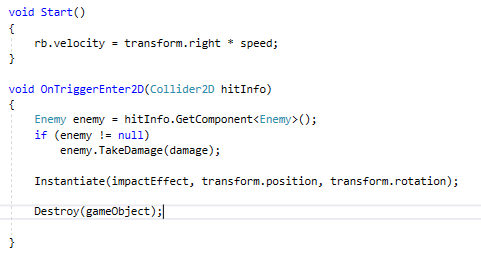Inside the start method it will set the velocity of the bullet so it will move at a desired speed. The other method is an OnTriggerEnter and when the projectile collides with anything it will check if its an enemy and if it is the enemy will take damage. After that it will instantiate an impact explosion effect and then it will destroy the game object.
The other type of attack is a melee attack. I used this tutorial to make the melee attack work. The code here allows the player to melee attack once every set amount of time at a button press. A collider is places on the front of the player to act as an attack range. It uses the Time.time which is an integer containing time and it adds a second to the current time once the player has attacked so that they cant attack again until that new time is met.
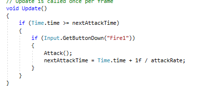The attack method works by checking if any object with a collider is inside the attack range. It then forces that enemy to take damage.
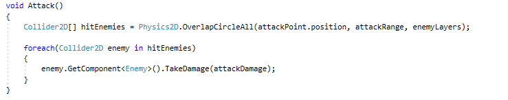The dissolve effect was done using this tutorial. I didn't use it with any scripts but I got to play around with it in the scene and see how it worked.
Reflection
The reason I started this tester game was to learn how to make and design a 2D platformer. I feel like I have learned an array of different skills from doing this and I am quite happy with all the different features I added to the scene. I as able to try a bunch of different basics including animations, tilemaps and combat. I feel like this has taught me some skills that will be useful as I develop more with Unity.
Space Adventure (title in progress)
The third project I worked on was a game. I developed this using the 2D skills I have learned from the past two projects. I added movement, spikes, a gravity changer, score, timer, spawn points, lighting, tilemaps, animations, door with corresponding key, coins and also after all this modified the code to make the game multiplayer compatible with an extra feauture of a player cam.
Movement was done by copy pasting the script from the tutorial that I used in the demo platformer but I modified it so that there was no crouching since my sprite did not need to.
The animation was done by drag and dropping the sprites I wanted animated together onto the screen and I would be prompted to save it as an animation. I learned animation in the previous game so I had a rough idea on how to get it working. For the player's animations, I played around with the players FSM so that it will work with jumping, landing, dying, moving and idling. Here is the FSM I used for the player animations. This one is slightly more complex than the test games and it involves an extra state for players dying. It comes off any state which means the player could be in any of the states and once the die variable is set to true the it will immediately change states and run the die state.
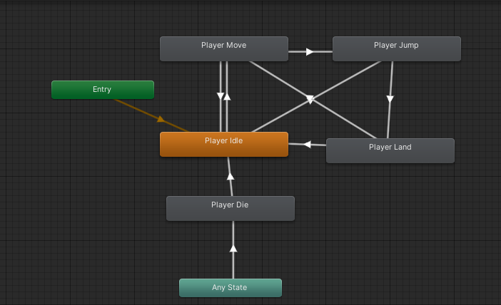
I implemented spikes in two different ways. One way was done using the tilemap and the other was done with sprites. Both methods used the same script for collision.
The way with the tilemap method was done by using the spike tiles from the tilemap and then later on placing an empty gameobject with a collider that spanned the spikes. This was my first idea of doing and it had
problems with the spikes going horizontally because they wouldn’t stick next to the wall nicely.
My second method of doing it with sprites fixed this. I created prefabs of the spike facing in each direction. I then applied a collider to each spike. To create a group of spikes I would put them in an empty gameobject to group them together. This second method of doing the sprites lets me place the spikes anywhere. Both spikes methods work by having the tag "deathzone" and when the player comes into contact with the spikes, it will call the players die method.
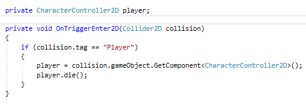The gravity changer was done by adapting the health bar from the tutorial I followed in my test 2D platformer project. To make the gravity changer I wrote a script to change the rigid body’s gravity effect on left and right click. The gravity bar on the screen then fills up or down based on what the current gravity value is. This is not the original code since its been modified for multiplayer but it works by checking if the player is holding down left or right click in a fixed update. Left and right click is used to increase and decrease the gravities effect on the Players rigidbody component. After the gravity has been updated the server is called to update the GameManager's global gravity. After the server updates its values it updates all the clients wtih their new gravity bar values and adjusts their gravity. I used the mirror library to make sure that only the server could update the current value and that the clients could not.
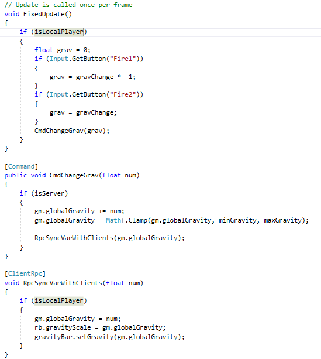Here is a video of the gravity bar
I used two tilemaps to build the level. I have a simple background tilemap without any colliders that is just a single colour. I also have another tilemap where I built the entire level. This tilemap has colliders on it so the player can navigate around the environment. The background tilemap was done to fix a problem with the lights that I added later on. I used the same skills I learned from my test game and this tutorial to build the tilemap
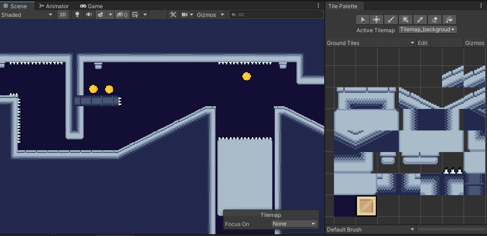The coins in the game were done by using this script here. It uses the same method of checking for a character collision and then it updates the score. The score is a text box that is placed on top of the main camera so it will always follow the user around. Once a coin has been collected, the coin will be disabled.
 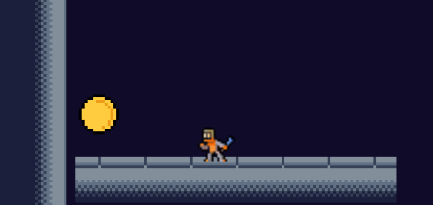
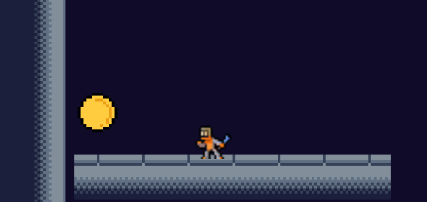
The timer was done by adapting code from this website . Once the timer reaches 0 the scene restarts. I later removed the timer from the game for multiplayer mode since I didn't have enough time to get it working before showcase and I didn't see much use for it in the multiplayer mode. The code below works by changing the timer text on the screen to equal the rounded version of time remaining. Every update the current time remaining will have the Time.deltaTime subtracted from it. Once the timer goes below 0 the timer is then stopped.
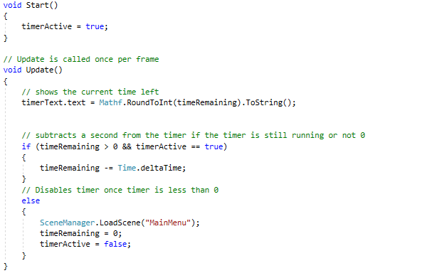To add the lighting to the game I used the same here as I followed for the 2D mobile game. I used it slightly differently because instead of using the round light I used freeform lights for the mini mights to make cones and a big freeform light around the whole map to give it a enclosed feel. The big light around the whole map is a light colour that makes the level look nicer. I did the other lights for general atheistic and I think the level looks better because of it.
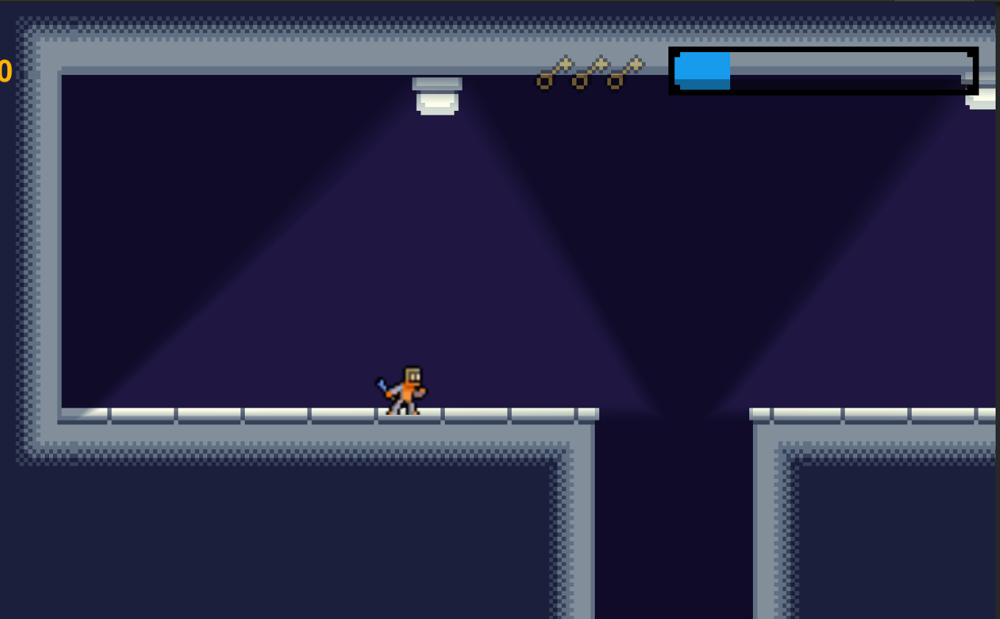I did the door and key by myself using the skills I had learned from the rest of the project. It works by having a collider on the key that when its interacted with, will update a string list inside the gamemanager class with the name of the key. The door will have a set keys name that will unlock it. When the player gets in range of the door it will check the game managers string list for the key name and if its there it will open the door by disabling a collider
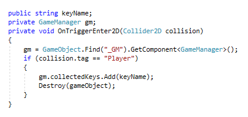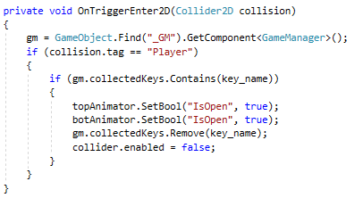
The spawnpoints where quite simple to implement. I created empty gameobject and placed a box collider inside of it and when the player triggers the collider it changes the spawnpoint variable of the player to the transform of the spawnpoint.
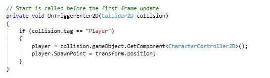The final thing I did for the single player part of the game was adding a main menu. In my past project when I was working on skin, I found out how to create a working menu with hover effects on the buttons. I adapted the code I implemented in skin to create a functioning menu for the game.
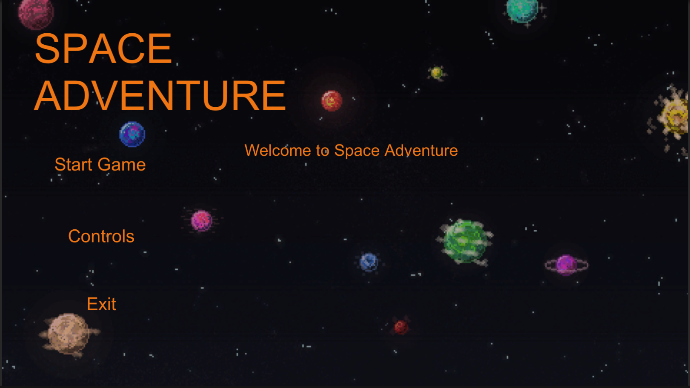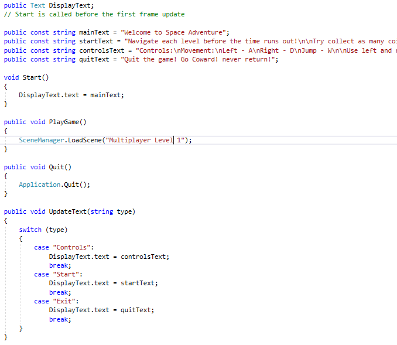
The biggest challenge was adapting the game to multiplayer. Most of the game before hand was coded with the idea of the game being strictly single player so the code was everywhere. To fix this I had to adapt some classes and methods so that they would be able to be run with multiplayer.
Network transforms and idenities Multiplayer was done using mirror. It is a really complex library and I spent a lot of time trying to get it all working. To get the multiplayer I tried following this YouTube series. I added created as network manager gameobject and placed network transforms and network identities onto the players. I then had to drag the player prefab into a component inside the network manager script as a final step. When I ran the code I ran into a few issues... The spikes would not longer kill the players, the spawnpoints didn’t work, the coins couldn’t be collected and camera would not move with the player. I had to recode all of my methods that would use the players controller to perform an action. I did this by making them check for a tag instead of a player. This meant that I could assign the tag to all the objects I wanted to interact with and it would work. The next step was trying to get the gravity bars to sync and be the same for both players. This mechanic was done so that friends could mess with each others jumps and we thought it would be a simple addition to the multiplayer. We eventually got it working by using this code. This problem was solved with Adon's help. He told me to not complicate it and try and get just a value to sync. I did this first and was able to figure it out after some time and I then fixed the gravity so it was synched across all players.
For multiplayer I also built another level using tilemaps. I didn’t learn anything new with this but I thought designing a new level was needed since the other level was only designed for one player.
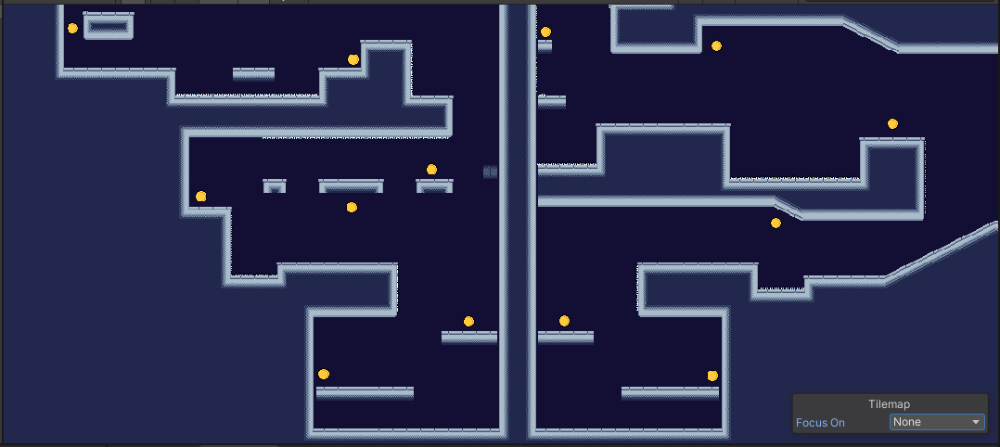The last feature I added was making a player cam. This is a camera that sits statically on the screen that shows the position of the other player so that you can screw with them. This isn’t really needed for local multiplayer since you will just look at each other’s screens. But if this game was moved to online it could be quite a fun addition. Here is the code I used to add the camera. This code is not my best work and was slapped together really last minute but it works by getting the players name and if the other player is in the game, it will make the camera's position be be the same as the other player
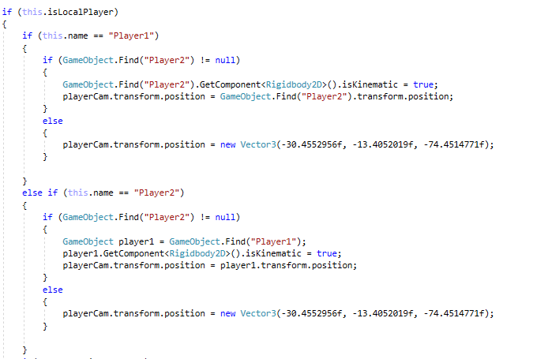Space Adventure Reflection
I am really proud of the game I’ve produced. I have received positive feedback from peers and I have put a lot of time effort into the game. When I first started making the game I found it quite fun and easy implementing and altering the code from my other two projects in the game. I liked creating a game from the ground up and it made it much easier to work with. I also added some features that I thought would be fun like adding the door and key, coins and a timer. The door and key was the highlight of my single player developing since I created the whole feature myself. I didn’t follow any tutorials or even use google to add them. I added the animations, and the collision and collections by myself by adapting code and just using the skills I had learned from nearly 7 months of Unity development. I pretty much completed the single player aspect of the game within two weeks and I am pleased with the outcome. The next step for me was making the game multiplayer and I struggled quite a lot with it. Initially it worked but it was super buggy. I firstly realized that most of my code was not intended for multiplayer. I find this as a bad thing since I feel that the code should have been easily adaptable and coded in a way that would not affect the program if extra features were added. I followed a tutorial for the basics and found adding the player to the scene quite easy. The problems arose when I tried adapting the gravity bar. I ran into so many walls trying to get it to work and I thought I would never get it finished. I tried solving it for two weeks and could not figure it out. I am quite proud that I persisted and finished that feature. Overall I am quite proud of the final game I produced over the span of a couple months and I think I have greatly improved as a programmer. I started the semester trying to drag frogs on a screen and finished with a fully functioning multiplayer game.
Professional
Work Ethic
This semester I made tried my best to finish each feature was requested by Adon into the game. This often involved me working before and after classes on researching and trying and failing to get the feature working. I had high and low points this semester with finishing all my work on time and this was greatly stemmed around my motivation. I created a nearly fully functional single player game over two weeks in the holidays and I was quite proud of the progress I had made over such a short period of time. When it came to getting the multi player working it really made it difficult to stay motivated and persist. I kept running into walls with every solution I tried and I found it really challenging.I tried about three different YouTubers and read through the documentation from official documentation to documentation made by another student. I also spent a lot of time googling and trying and failing. Although I struggled through this, each class I'd make sure to come back with at least an ounce of progress and always be open to trying new methods at trying to get it to work. My work ethic overall was quite good this semester and I think this shows with the amount of work I produced in 16 weeks. I also came to every class apart from one and was on time to nearly all of them.
Communication
Although I worked alone this semester, I had good communication skills. I made sure to constantly to to Adon and made sure what I was developing and coding was what he wanted. Since we started two games from scratch with only the slightest idea on what the concept of the game was I belive we communicated well to each other in person so that what was produced was what we both wanted. I also recieved constant peer feed back from my class mates on how my game was looking.
Reflection
Final reflection
Overall I am quite happy with my contribution this semester across all three projects I worked on. The mobile game was a challenge from the get go but I managed to get a feature working before the start of the next project class. I found lots of challenges while making the parallax scrolling, making the frogs move and saving. I feel like these challenges were not the hardest to overcome, but I was happy that I could figure them out. The 2D platformer demo was originally to get some skills and basic knowledge with 2D platforming to help a client create a game. When that fell through, I kept adding things to the game due to Adon's request and I feel like I learned a lot about Unity and what I could do. The third project of making a functional 2D platformer was a really enjoyable experience. I learned a lot about myself and what I could program given the right situation. Last semester I was working on SKIN. This meant trying to decode what other students had done before me which caused me trouble while implementing features. Creating this game gave me the freedom of doing what I wanted and I used all of my skills I had developed over the past year with Unity into a game which I am proud of. Given more time, I could see this game going far. I ran into a big problem with trying to make the game multiplayer. All the code I had done was intended for singleplayer and this caused me problems. Also trying to understand a complex multiplayer library put a halt to my rapid progress with the game. I have now got multiplayer to work after weeks of trying and failing to make it work. I am really happy that I finally got it working and I'm quite proud of the game I've produced over this amount of time. Overall I am pleased with my contributions the the Game Develoment project and I think I've grown in knowledge and in professional skills.